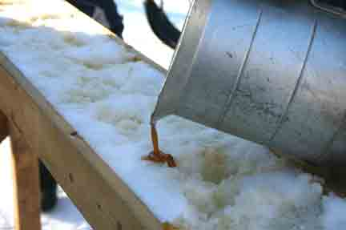

Here is a delicious winter treat that is easy to make and has onlytwo ingredients: maple syrup and new snow. My grandma taught me tomake this confection and called it jack wax.
Put 1 cup of real maple syrup in a pan and bring to a boil. Turndown the heat and simmer to 235 degrees on a candy thermometer (ifyou don't have a candy thermometer, cook until 'soft ball' stage,which means a spoonful of the syrup dropped into a cup of coldwater forms a soft ball). While the syrup is simmering, take a9-by-13-inch cake pan and fill it with clean snow, packed downwell. When the syrup reaches softball, slowly pour the hot syrup inribbons onto the packed snow.
With clean fingers, pick up a section of the caramel-like candy andpop it in your mouth. The combination of the super-sweet maplesyrup and the slightly metallic taste of the cold fresh snow is adelightful winter treat.
|
 |
|
|